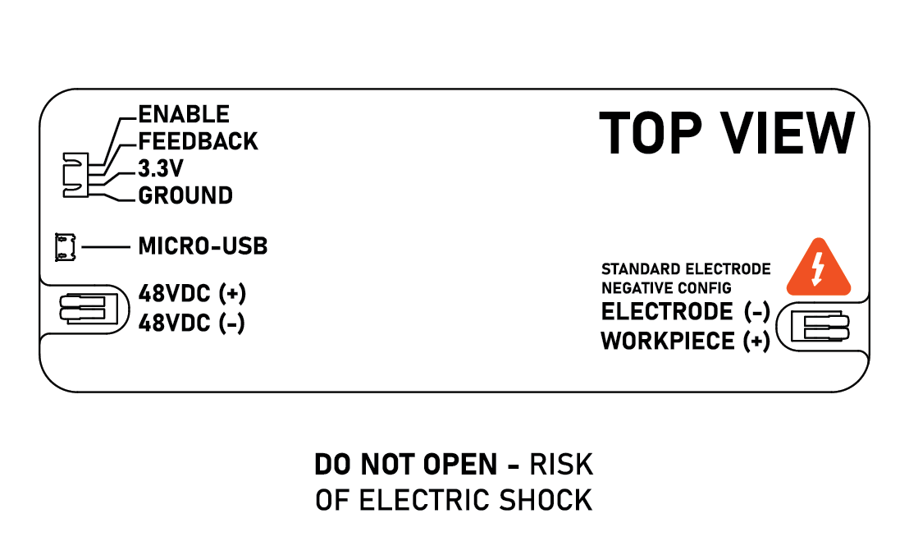

Powercore V3.0 User Manual
What is the Powercore V3.0?
The Powercore V3.0 is an open-source wire EDM (electrical discharge machining) power supply developed by Rack Robotics. It aims to provide a cost-effective and easily replicable solution for wire EDM enthusiasts and professionals.
What is wire EDM?
Wire Electrical Discharge Machining (Wire EDM or WEDM) is a manufacturing process used to cut intricate shapes and contours in electrically conductive materials, such as metals. It operates by generating a series of rapid electrical discharges (sparks) between a thin, electrically charged wire (usually made of brass) and the workpiece, which is submerged in a dielectric fluid (usually water). The electrical discharges create intense localized heat, which melts and vaporizes small portions of the material. This allows for the creation of complex geometries with high accuracy and fine surface finishes. [!DANGER]
- The Powercore V3 operates at a potentially hazardous voltage of 48 - 150 VDC, and supplies high-power waveforms. DO NOT TOUCH the Powercore V3 or any exposed electrical conductor, workpiece, or electrode during the EDM process
- EDM produces strong electromagnetic fields and may interact with medical implants. DO NOT operate the Powercore V3 or occupy a space near the Powercore V3 if you have a medical implant
Help
If you find that there’s something unclear in this documentation, please submit a ticket on Github.
If you have questions, please join our discord.
Powercore V3.0 IO Ports
| Port | Description |
|---|---|
| ENABLE | Used to turn on spark generation when supplied with 3.3V |
| FEEDBACK | Reports EDM power draw via active-low PWM. Nominal 10%-90% during machining. |
| 3.3V | 3.3VDC. Can be used conveniently to enable machining. |
| GROUND | Common ground to board and enclosure. |
| 48VDC+ | Supplies power to spark generator. |
| 48VDC- | Supplies return path for power. |
| ELECTRODE (-) | Most common setup. Use with brass electrodes on most materials. |
| WORKPIECE (+) | Most common setup. Use with brass electrodes on most materials. |

Basics of Operation
Startup
When first starting up the Powercore, it is a good idea to have it connected via USB and to have your serial monitor open. We use the Arduino IDE at a baud rate of 9600. This will allow you to read any potential error messages and to positively determine startup success.
On startup, the device disables the output to prevent accidental discharges. During power-management module initialization, the device may produce a whining sound for approximately one second. This is normal. Subsequently, the output current sensor is calibrated, and serial communications are established.
During startup calibration, if the lookup table values for voltage fall outside the specified range, the device will terminate startup, enter fault mode, and print ‘ERROR: DPOT voltage range is less than expected’ over the serial interface. If you have errors with your Powercore, it is a good idea to check the readout via your USB cable.
If everything starts up correctly, you should see a similar message to the following over your serial monitor:
Setting DPOT to minimum position...
Waiting for voltage to stabalize...
Reading voltages for DPOT lookup table...
Boost Converter Digital Potentiometer Voltage Table:
0: 51
1: 52
...
109: 161
110: 166
Idle Mode
The device remains in idle mode until the enable port is connected to 3.3 V. There is a port for 3.3 V on the Powercore V3 GPIO header seen in the diagram above.
In idle mode no discharges are produced.
Cutting
In the basic cutting mode, called “Iso-Frequency Mode”, the discharge frequency is constant. The Powercore V3 enters cutting mode by default or when the ‘EDM_ISOFREQUENCY_MODE’ command is sent over the USB interface.
To enter Iso-frequency mode for EDM, the enable port must be pulled high to 3.3 V. If the enable port is not pulled high, the device remains in idle mode.
Once cutting is enabled, your motion system may be commanded to proceed towards the workpiece with your electrode. Cutting speeds differ with motion system configuration, each combination of work material and electrode material, their thicknesses, and electrode polarity.
Electrode polarity describes which portion of the output your electrode is connected to. Electrode negative indicates that your electrode (e.g. brass EDM wire) is connected to the negative side of the Powercore’s output terminal. Electrode positive indicates that your electrode is connected to the positive side of the Powercore’s output terminal.
Note: It is NOT RECOMMENDED to perform plunge EDM in an open-loop control state. This is extremely likely to create a prolonged short across a wide surface area and may damage the Powercore.
Best Practices
-
Avoid short circuits. A short circuit occurs when the POWER port outputs short together. This may happen if wiring is incorrect, or the cutting electrode collides with the work. While there are software checks for short circuits, a prolonged short circuit can damage the Powercore.
-
When integrating the Powercore V3.0 into a wire EDM build, ensure that the EN port fails to an off default state during machine shutoff.
-
Avoid disconnecting main power from the Powercore V3.0 while the device is enabled.
Technical Information
For more in-depth technical information and theory of function, please visit the Powercore V3 repository.
Contributing
Want to chat? Please join our discord.